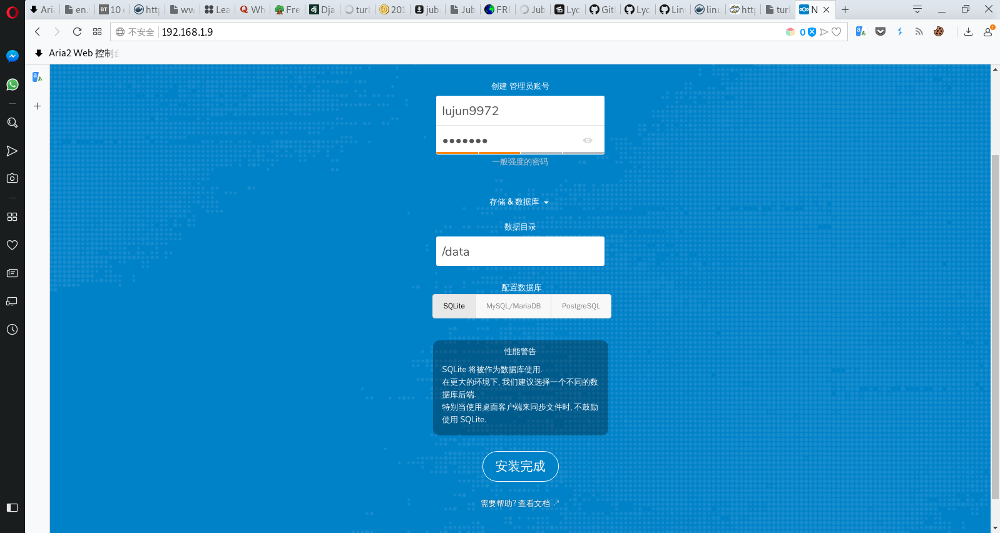
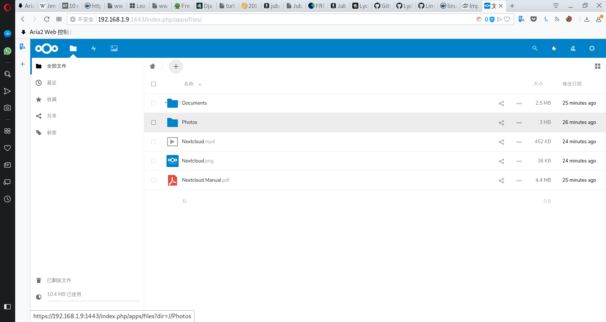

一行命令把OrangePi打造成文件云服务器
nextcloud是一款很有名的云服务器应用，借助docker可以让我们一行命令就将nextcloud部署到orangepi上:
docker run -d \ --name nextcloud \ -p 1443:443 \ -p 1080:80 \ -e PUID=${UID} -e PGID=$(id -g) \ -v ${PWD}/appdata:/config \ -v ${PWD}/data:/data \ lsioarmhf/nextcloud-aarch64
之后访问 http://orangepi:1443 就会进入安装界面:

输入用户名和密码，另外如果pi的性能不够，推荐使用SQLite作为数据库。
点击安装完成后，等待一段时间让nextcloud初始化，之后用刚才设置的用户名和密码登陆就能看到nextcloud的界面了
